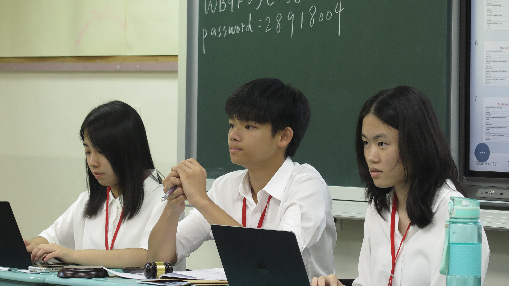
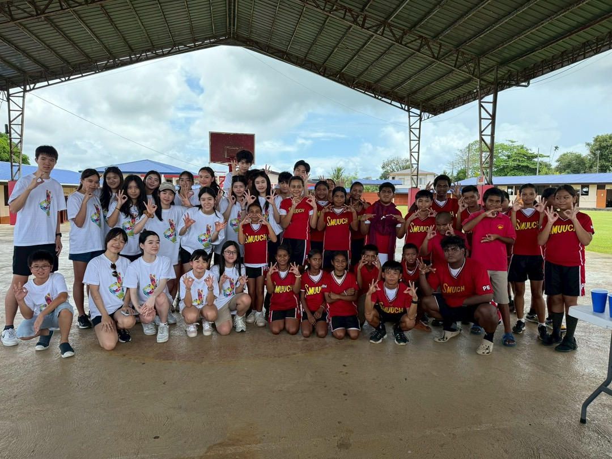
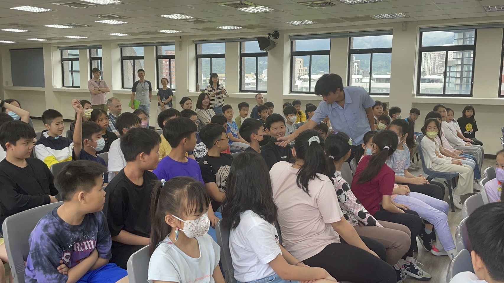
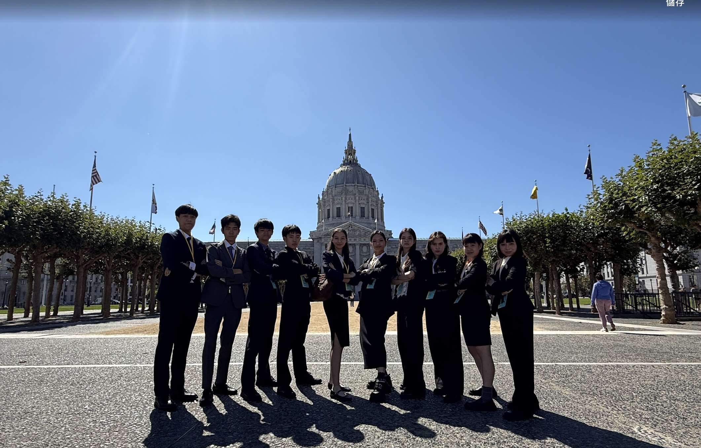

Activities
課外活動、實戰外交與學術研究歷程

模擬聯合國社 (MUN Club)
- 課程開創：規劃社團核心學術課程，並創辦校內課後模聯培訓班，培育新一代賽手。
- 會議領導：擔任過累積 300人規模 會議的主席（Director）與學術總負責人。
- 教學影響：指導超過 100 位學員，其中 10 位以上於各大全國會議奪下大獎。
- 耶魯模聯：獲選參與 Yale MUN Taiwan 擔任助理主席 (Assistant Director)。

Wego ICDF 社團
- 百萬募款：跨校合作成功募得 100萬新台幣 醫療援助物資與慈善基金。
- 外交實踐：親赴邦交國帛琉進行國際人道救援實地參訪，致贈愛心物資予當地國小。
- 專案統籌：策劃完整的募款執行計畫，領導跨領域專案小組與國際NGO對接。
- 智庫對話：受邀參訪國合會 (ICDF) 總部，與第一線資深外交人員展開深度實務對話。

STEM 科學研究
- 2024 3min4Science：勇奪科學敘事與簡報全國第一名 (1st Place)。
- Ocean Challenge：2024 年打入全國前八強 (Top 8)，持續深化海洋環境科學研究與 AI 應用探討。

影視創作 ✕ 雙語主持
- 小主播經歷：連續 5 年於大愛電視台主流節目擔任青年主播，具備高階面對鏡頭與公眾演說能力。
- 影賽殊榮：個人獨立與團隊作品累計奪下 4 座全國微電影大獎，斬獲 10萬新台幣 總獎金。

爵士樂團 (Band)
- 舞台實戰：組建並領導樂團，累計 7次正式大型 Live 演出，並為學校大型慶典創作原創主題歌曲。
- 公益音樂：發起「音樂回饋專案」，前往在地養老院、銀髮中心與社區公園舉辦慈善義演，用音樂溫暖社會。

社區公益英語課程
- 造福社區：長期支援並輔導超過 60 位弱勢家庭學生，研發獨創的「圖像記憶字彙法」並錄製數位複習影片。
- 雙軌教學：針對學員程度進行差異化教材設計，從初階發音字彙單到高階時事思辨討論，全面提升社區青年雙語力。

外交小尖兵 (Teen Diplomat)
- 菁英選拔：從全台頂尖名校上千名競爭者中脫穎而出，參與外交部舉辦之密集青年外交與國情簡報訓練。
- 國家代表：獲選為官方青年外交代表之一，代表赴美國洛杉磯、舊金山等地展開為期 10 天的高階官方拜會、智庫交流與文化國民外交。

全英語思辨與競賽辯論
- 最佳辯士：於極高邏輯強度的 Lincoln-Douglas (LD) 單人思辨辯論賽中，勇奪象徵最高個人榮譽的最佳辯士大獎 (Best Speaker Award)。
- Cicero 戰隊：憑藉強大論證實力，獲選入列 Cicero 全英思辨賽第一戰隊核心成員 (First Seed Member)。

aGENda Podcast
- 自媒體創辦：獨立規劃、技術架設並創辦聚焦青年觀點、國際時事與社會思辨的數位播客（Podcast）節目。
- 深度訪談：擔綱節目主理人，邀訪多位不同領域的青年代表及專家，鍛鍊高階雙語訪談企劃力、新媒體行銷與聲音敘事影響力。

智庫與頂尖機構研究實習
- 台大綠能研究：於台大 E3 中心完成為期 16 週深度研究，發表關於永續航空燃油 (SAF) 之英文政策報告，並向台大教授進行正式答辯。
- CAPRI 淨零分析：於亞太堅韌研究基金會 (CAPRI) 撰寫《全球淨零排放政策比較分析》，展現頂尖智庫規格的政策分析與文獻研究水準。